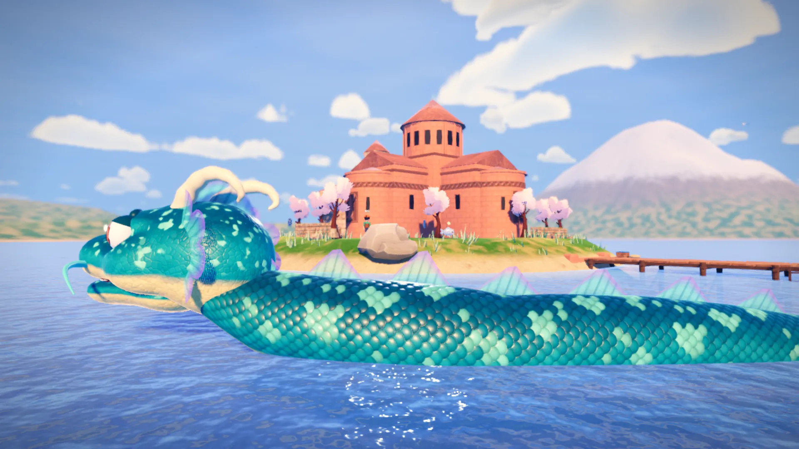
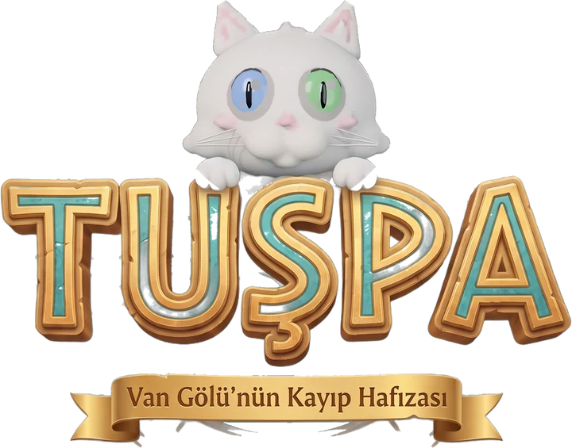

01
Öğretmen
Hafta içi sınıfta, hafta sonu öğretmenlerle: modeli önce kendi sınıfımda yaşıyor, sonra paylaşıyorum.
Türkiye Yüzyılı Maarif Modeli
Eğitim Ekosistemi
Sahada öğretmen, üretimde geliştirici, yönetimde koordinatör.
Hakkımda
Her şey bir sınıfta başladı. Bir öğrencinin gözlerinde “anladım” ışığının ilk kez parladığını gördüğüm gün, hayatım boyunca neyin peşinden koşacağımı da anladım: öğrenmenin kendisi.
O ışığı büyütmek için hep yeni yollar aradım. Öğretmenlere eğitimler verdim; sınıfta öğrendiğimi çoğaltmanın en kısa yolu buydu. 2021’de yapay zekâ araçlarını araştırmaya başladığımda, bu yolun beni yepyeni bir öğrenme serüvenine çıkaracağını bilmiyordum; kod yazmak da bu serüvenin içinde kendiliğinden geldi. Bugün yapay zekâ araçları üretim hayatımın doğal bir parçası. Bazı dersler en iyi bir oyunun içinde anlatılıyor; Tuşpa: Van Gölü’nün Kayıp Hafızası böyle doğdu.
Sorularım büyüdükçe kendine bir mikrofon buldu. Kaydedenler Kulübü, tasavvuftan yola çıkıp Doğu ve Batı okumalarıyla insanın anlam arayışının peşine düşen bir kültür-sanat podcast’i. Modern insanın hayatını sorguluyor, çıkış yolları arıyoruz. Mikrofonun öbür tarafında da bir tutkum var: mix, mastering ve ses tasarımıyla hem kendi bestelerimi hem de sevdiğim şarkıların yorumlarını üretiyorum.
Sonra işin gönüllü tarafı geldi. 2018’de elimde gitarla Erzurum’un köy okullarına gittim; Kardeş Köy Okulu projesi bugün hâlâ sürüyor. TOG ile yürüttüğümüz çalışmalar ve deprem bölgesine uzanan elimiz bana şunu gösterdi: öğrenme en çok dayanışmada büyüyor.
Bugün bir okulun yönetimindeyim. Ünvan değişti ama merak hiç değişmedi. Her sabah hâlâ aynı soruyla uyanıyorum: bugün kimden, ne öğreneceğim?
Portreler
Aynı merakın dört hâli.
01 – 04
Hafta içi sınıfta, hafta sonu öğretmenlerle: modeli önce kendi sınıfımda yaşıyor, sonra paylaşıyorum.
Türkiye Yüzyılı Maarif Modeli
Van’ın binlerce yıllık hafızasını bir oyuna dönüştürüyorum: kodu Godot’ta yazıyor, dünyayı Blender’da kuruyorum.
TuşpaTÜBİTAK 4008
Podcast’te soruları soruyor, stüdyoda gitar, davul ve vokalle cevabını arıyorum.
Kaydedenler KulübüKozmik Kalıntılar
Erzurum’un köy okullarından deprem bölgesindeki destek sınıflarına: öğrendiğimi dayanışmayla çoğaltıyorum.
KızılayTOGKardeş Köy Okulu
İlham ve Anılar
Prof. Dr. Alev Önder hocamın selamını, onun hocası Doğan Cüceloğlu’na iletmek için Kadir Has Üniversitesi’ndeki ÖRAV buluşmalarına gittim.
Bir öğrencinin, hocasının selamını onun hocasına götürmesi… O gün elimde bir selamdan fazlası vardı: kuşaktan kuşağa uzanan bir öğrenme zincirinin küçük bir halkası.
Sayfalarda tanıdığım sesi ilk kez karşımda dinlemek, yazdıklarının ardındaki insanı görmek demekti. Bir hocanın emeği, öğrencisinin öğrencisine kadar uzanıyordu; ben de o zincirin içinde durduğumu hissettim.
Bir gün bir eskicinin tezgâhında Doğan Cüceloğlu’nun bir kitabına rastladım. İlk sayfasında 1994 tarihli bir not vardı: biri bu kitabı annesine hediye etmişti.
Yıllar sonra o armağan, el değiştire değiştire benim ellerime ulaşmıştı. O kitabı Doğan Hoca’ya götürdüm. 26 Şubat 2019’da, annesine yazılmış o notun yanına kendi imzasını ekledi: “Hakan Öğretmen’e, iç çocuk hep gülsün!” Sonra bana e-posta adresini verdi ve şöyle dedi:
“Hayatın içinden bu hikâyeleri bana yaz.”
Ben de yazdım. Köy okullarında yaşadıklarımı, sınıfta bana öğretilenleri, bir çocuğun gözlerinde yanan o küçük ışığı… Hikâyeleri tamamlayıp göndermeye hazırlandığımda ise Doğan Hoca Hakk’ın rahmetine kavuşmuştu. O satırlar hiç yayımlanmadı.
Ama “yaz” deyişi hâlâ kulağımda. Bu sayfadaki her cümle biraz da ona yazılmış, gönderilemeyen bir mektup.
Doğan Cüceloğlu Psikolog · Yazar · 1938 – 2021
Michelangelo’nun David’i bana güzelliğin bir oran ve sabır meselesi olduğunu öğretti; Sokrates ise iyi bir sorunun iyi bir cevaptan daha uzağa taşıdığını.
Görsel tasarımcı Murat Tüvör’le 2016’dan beri tanışıyoruz. Şubat 2019’da benim için özel bir 3D tasarım hazırladı ve onu Türkiye’nin ilk yerli 3D yazıcısıyla bastı; Blender’la da onun vesilesiyle tanıştım. Bu heykelleri sonra kalıba alıp yeniden üretirken, katman katman yükselen bir heykelin bir öğrenme sürecine ne kadar benzediğini gördüm. Biri estetiği, diğeri sorgulamayı temsil ediyor; sınıfta da, oyun tasarlarken de aradığım şey bu ikisinin buluştuğu yer.
O gün zihnimde kurulan bağ, bugün tasarladığım oyunun, Tuşpa’nın temel taşlarından biri.
Heykel Tasarımları Murat Tüvör
Kariyer Yolculuğu
Mezuniyetten bugüne uzanan yol: öğretirken öğrenmek, ürettikçe derinleşmek.
2017
Lisans · Mezuniyet
İstanbul’da öğretmenliğin temellerini attığım yıllar. Diploma elime geçtiğinde asıl dersin sınıfta başlayacağını biliyordum.
Kasım 2018
Yan yol · Sosyal SorumlulukKardeş Köy Okulu: elimde gitar, Erzurum’un köy okullarına uzanan yol başladı.Şubat 2019
Yan yol · İlham ve AnılarMurat Tüvör’ün benim için tasarladığı 3D David: Blender’la ilk tanışma.2019
Sınıf Öğretmenliği · 2019 – 2025
O pencere, öğretmenliğe ilk adım attığım yerdi.
2019’un gri bir gününde, ilk dersliğimin demir parmaklıkları ardından bahçeye bakıyordum: turuncu üniformalar, ıslak parke taşları, bir topun peşinde koşan küçük ayaklar. Parmaklıklar dışarıyı kare kare bölüyordu ama çocukların sesi bütündü. O gün anladım ki öğretmenlik, pencerenin bu tarafından dünyayı göstermek değil; o kapıyı birlikte açıp bahçeye çıkmaktır.
Altı yıl boyunca aynı kapıyı her sabah yeni bir heyecanla açtım. Her ders bir deney, her öğrenci yeni bir soru oldu; öğretmeyi en çok öğrencilerimden öğrendim. Kitaplar, oyunlar ve kodlama atölyeleri bu sınıfta filizlendi.
2019
Yan yol · MüzikMetronom Audio’da ilk kayıtlar; 2020’de ağabeyim Onur Bolat’la jam oturumları.17 Kasım 2023
Yan yol · ProjelerFractal İstanbul: Tuşpa’nın şehri bu sergide filizlendi.2025
Yüksek Lisans · Mezuniyet
Sahada biriktirdiklerimi akademiyle buluşturduğum yıllar. Sorularımı bu kez araştırmanın diliyle sordum.
Bugün
Yönetim · Özalp Atatürk İlkokulu · 2025’ten bugüne
Ünvan değişti, merak aynı kaldı. Artık bir okulun bütününde; öğretmenlerle, öğrencilerle ve ailelerle birlikte öğrenmeyi büyütüyorum.
Liderlik ve Eğitim
Türkiye Yüzyılı Maarif Modeli’ni sahaya taşıyan formatörlerden biri olarak öğretmenlerle yan yana öğreniyorum. Bir öğretmene dokunmak, yüzlerce öğrenciye dokunmak demek.
Eğitici Eğitimi · Türkiye Yüzyılı Maarif Modeli
Formatörlük yolculuğunun başladığı yer: modeli önce öğrenmek, sonra öğretmek için.
Formatör · İstanbul · 27 Haziran 2024
Öğretmenlerle modeli sınıf pratiğine dönüştürdüğümüz oturumlar.
Formatör · Van · 5 Eylül 2024
Deneyimi paylaşmak, soruları birlikte çözmek.
Formatör · Van · 14 Mayıs 2025
İlkokuldan meslek lisesine: aynı model, farklı bir sınıf iklimi.
Sahadan kareler
Liderlik ve Koordinasyon Türkiye Yüzyılı Maarif Modeli
Erdem, Değer, Eylem
· TED Van Koleji & Evliya Çelebi Uygulama Oteli
Müfredatın mimarlarını, sahanın öğretmenleriyle aynı masada buluşturan iki gün.
Türkiye Yüzyılı Maarif Modeli’nin mimarları; ülkemizin dört bir yanından gelen müfredat tasarımcıları, ders kitabı yazarları ve editörleri… Türkiye’nin eğitim geleceğini yeniden kuran ekip, bu isimlerden oluşuyordu. Ve biz, Van’ın üç merkez ilçesinden (İpekyolu, Edremit, Tuşba) gelen idareci ve öğretmenlerle onları aynı masada buluşturduk. Koordinatörlüğünü üstlendiğim iki günlük program, bu iki dünya arasında bir köprü olsun diye tasarlandı.
Sahadaki uygulayıcılar ile müfredatın mimarları, aynı masada.
İlk gün TED Van Koleji’nde, modeli yazanlarla onu sınıfa taşıyacak olanlar atölyelerde yan yana çalıştı. İkinci gün Evliya Çelebi Uygulama Oteli’nde “Erdem, Değer, Eylem” paneliyle program tamamlandı.
Birinci gün
TED Van Koleji
Atölye uygulamaları
İkinci gün
Evliya Çelebi Uygulama Oteli
“Erdem, Değer, Eylem” paneli
Yaratıcı Teknoloji ve Projeler
Bir oyun, üç dijital kitap, bir makale ve iki atölye. Hepsinin başında sınıfta sorulmuş bir soru var.

Kapalı beta2025’ten bu yanaDevam ediyorGodot & Blender

“Su… hafızayı saklar. Ama efsaneler asla gömülü kalmaz.”
Van’ın binlerce yıllık hafızasını keşfedilecek bir dünyaya dönüştüren 3D macera. Bir Van kedisi olan Tuşpa’yla gölün kıyısından Akdamar’a, kale surlarından şelalelere uzanan bir yolculuk. Şehrini taş taş kurduğum, kapalı beta sürümündeki oyunum.
Fractal İstanbul CentroMundi · Müze Gazhane · 17 Kasım 2023
Tarık Tolunay’ın davetlisi olarak Kadıköy Hasanpaşa’daki Müze Gazhane’de açılan Fractal İstanbul CentroMundi sergisindeydim. Tolunay, İstanbul’u yıllar süren bir emekle, sokak sokak, bina bina, yaklaşık 200 milyon piksellik dev bir kent çizimine dönüştürmüştü; bir sanatçının gözü ve bir şehir plancısının titizliğiyle. O haritanın önünde dururken Tuşpa’nın şehrini nasıl kuracağımı ilk kez net gördüm: Van’ın geçmişini katman katman, yaşayan bir şehir olarak tasarlamak.
Godot’da kurup gezdiğim mekânlar, oyunun kendi kamerasından
Efsaneden oyuna: gölün bekçisi ve dört dönemin parası
Yıllardır anlatılan efsanenin korkutucu yaratığını, gölün hafızasını saklayan meraklı bir karaktere dönüştürdüm.
Boynuzları, yarı saydam yüzgeçleri ve gölün mavisini taşıyan pullarıyla Akdamar açıklarında dolaşıyor. Gövdesi, birbirini izleyen parçalardan oluşan bir zincirle suyun üstünde dalgalanıyor; Blender’da modelleyip Godot’ta kodla canlandırdım.
360° Yakından bakın: karakter ve sikkeler
Oyundaki modellerin sinematik ışıkla render’ları
Menüler, altyazılar ve görevler dokuz dilde; Arapça sağdan sola
Kapalı beta: çocuklar Tuşpa’yı ilk kez oynarken
TÜBİTAK 4008 Kapsayıcı Toplum Programı kapsamında, Mevlânâ’nın şehri Konya’da, Selçuk Üniversitesi’nde düzenlenen “Hikâyelerin Dijital Dönüşümü” atölyesinde yer aldım. Diskalkuli, disleksi ve disgrafi tanılı öğrenciler için yapay zekâ araçlarıyla “Dijitakım 2025” dijital hikâye kitaplarını ürettik.
Fikirden ürüne bir atölye: kâğıt üzerindeki tasarımlar, yapay zekâ araçlarıyla geliştirilip giyilebilir tişörtlere dönüşüyor.
Kod yazmayı oyun kurarak öğrenmek: çocukların kendi küçük oyunlarını tasarlayıp çalıştırdığı atölye.
Mayıs 2025’te, yapay zekânın ilkokul öğrencilerinin yazma becerilerine etkisini inceleyen bir araştırmanın verilerini sınıfta topladım. Sınıftaki gözlem, uluslararası bir bulguya dönüştü.
Sosyal Sorumluluk
İnsan Hikâyeleri
Bazı yollar bir projeyle değil, bir insanla açılır. İki hikâye de gecenin bir vakti, yanlış çalan bir telefonla başladı.
Aralık 2019’du. Bir öğrencim okulda merdivenlerden düşmüş, onu hastaneye kaldırmıştık. Ailesine ulaşmak için elimizde yalnızca annesinin numarası vardı. Hastaneden sonra çocuğu ailesine teslim ettim, “Acil bir durum olursa beni arayın” deyip evime döndüm.
Gece saat 02:30 sularında telefonum çaldı. Aklıma gelen ilk şey öğrencimdi: ona bir şey mi olmuştu? Karşıdaki ses hiç beklemediğim bir şey söyledi: “Merhaba, Cevahir’den İsmail ben. Katlar ne durumda?” “Abi,” dedim, “ne Cevahir’i, ne İsmail’i?” ve kapattım.
Ama içimdeki kurt susmadı; uyuyamadım. Bir bardak su içip o bilinmeyen numarayı geri aradım. Van’da çiçeği burnunda bir sınıf öğretmeni olduğumu, öğrencilerimden birinin hastanede olduğunu, telefonu çocuğun ailesinden biri arıyor diye açtığımı anlattım. Sonra sordum: “Siz kimsiniz, gecenin bu saatinde neden aradınız?”
İsmail Abi, Mecidiyeköy’deki Cevahir Alışveriş Merkezi’nin temizlik ekibinden sorumluydu. O gece ekibine katları kontrol ettirmek için bir numara tuşlamış, tek bir rakamı yanlış girmişti. O tek rakam bizi tanıştırdı.
Bu bir tesadüf değildi; tamamıyla tevafuktu.
Aynı gece ona, sınıfımızın ve öğrencilerimizin hayatına dokunacak, iyiliği çoğaltacak ortak bir gönül köprüsü arayışında olduğumuzu anlattım. “Genel yönetim direktörümüz Nevin Yağmur,” dedi. “Aynı zamanda bir sosyal girişimci. Bir Nevi Mutluluk adında bir girişimi var; Doğu’da, Güneydoğu’da çocuklara armağanlar ulaştırıyor. En çok da kız çocuklarının geleceğine inanıyorlar; onların eğitim yolculuğuna gönülden destek oluyorlar, kitaplarla ve umutla yanlarında yürüyorlar. İstersen sizi tanıştırayım.” Kabul ettim.
Nevin Yağmur’la enerjimiz ilk konuşmada tuttu. O günden bu yana Van’da, Doğu’da onlarca yardım ve sosyal sorumluluk çalışmasını birlikte yaptık; her seferinde hem kendisi hem sevdikleri imdadımıza Hızır gibi yetişti. Mütevelli Heyeti’nde bulunduğu Toplum Gönülleri Vakfı ile çalışmalarımız sürüyor; deprem bölgesinde de ayrı noktalarda olsak da gönül diliyle el ele çalıştık. Yıl 2026. Bu gönül dostluğu sürüyor ve sürecek.
İsmail Abi’nin annesi Zehra Anne o günlerde hastanede yatıyordu. İsmail Abi ona benden, Van’daki öğrencilerimden bahsetmiş. Zehra Anne bir gece rüyasında çocukları görmüş. Uyandığında tek bir dileği varmış: Van’daki çocukların elleri, ayakları üşümesin.
Aralık 2019 · Van
Kendi cebinden biriktirdiği parayı oğluna verdi. İsmail Abi beni aradı; gönderdiği parayla eldivenler, patikler, çoraplar aldım ve öğrencilerime tek tek dağıttım.
Bir hafta sonra çocuklar teşekkür etmek istedi. Kalemlerini aldılar ve Zehra Anne’yi çizdiler: kanatlı bir melek. Kâğıdın bir yanında Van, öbür yanında İstanbul; arada kendileri ve onlara uzanan bir el. Resimlerin hepsini kargoyla Cevahir’e, İsmail Abi’ye gönderdim.
Kargo ulaştığında telefonda ikimiz de hüngür hüngür ağladık.
Zehra Anne, çocukların kendisi için çizdiği meleği göremeden melek oldu.
O resimlerin hiçbirinin fotoğrafını çekmedim; yalnızca o baksın diye çizilmişlerdi. Doğan Hoca bana bu hikâyeleri yazmamı emanet etmişti. Nevin Yağmur’la tanışmamız o hikâyelerin ilk satırıydı; Zehra Anne’nin patikleri ve çorapları ise en sıcak sayfalarından biri oldu. Şimdi, Hoca’nın dediği gibi, yazıyorum.
Hikâyeden sahaya
“Bir kutu kitap, bir gitar ve biraz zaman. Bir çocuğun hayatını değiştirmek için bazen bu kadarı yetiyor.”
Erzurum Hınıs’taki Acar ve Tapu ilkokulları gibi köy okullarına uzanan küçük bir yardım kampanyası olarak başladı. İstanbul’daki Erzurumlular Derneği’nin desteğiyle bugün hâlâ süren bir kardeşlik projesine dönüştü. Elimde gitar, çantamızda armağanlar; köy okullarının kapısını çalıyor, şarkıları çocuklarla birlikte söylüyoruz.
6 Şubat 2023’te asrın felaketini yaşadık. On bir ilimizde binalarla birlikte çocukların oyunları, okul yolları ve güven duyguları da enkazın altında kaldı. O günlerde Türk Kızılay’ın gönüllüsü olarak Viranşehir’e gittim.
Kendi ekibimizi kurduk; Bir Nevi Mutluluk ve Kızılay desteğiyle depremden etkilenen çocuklar için psikososyal destek sınıfları açtık: birkaç masa, renkli balonlar, bir tahta ve yeniden öğrenme isteği. Nevin Yağmur ve ekibiyle ayrı bölgelerdeydik ama hep koordineli hareket ettik.
Orada iyiliğin örgütlendiğinde nasıl büyüdüğünü gördüm.
Amacımız dersleri sürdürmenin ötesinde, çocukların yeniden nefes alabileceği, kendini güvende hissedebileceği bir alan açmak ve yaralarını birlikte sarmaktı. O çocuklar da bana öğretmenliğin en saf hâlini yeniden hatırlattı.
Kuşaklar arası dayanışmayı güçlendirmek, büyüklerimizin tecrübesini geleceğe taşımak ve çocuklara vefa duygusunu aşılamak için düzenlediğimiz bir buluşma.
Müzik ve Ses
Bir podcast, bir beste, stüdyoda geçen geceler. Müzik benim için hep başka bir öğrenme biçimi oldu.
Köy okullarına giderken yanımdan ayırmadığım gitar, bu bölümün de başladığı yer.
18 Bölüm
Tasavvuftan yola çıkıp Doğu ve Batı okumalarıyla insanın anlam arayışının peşine düşen bir podcast. Modern insanın hayatını sorguluyor, çıkış yolları arıyoruz. Stüdyoda kaydettiğim cover’lar da aynı kanalda yayımlanıyor.
“Neresindeyim”: bir sorudan doğup stüdyoda sese dönüşen ilk şarkı. Piyanoda Ufuk Aksel.
2019–2020’de Metronom Audio’da başlayan kayıt ve jam oturumlarının içinden büyüdü.
YouTube’da dinle ↗Stüdyonun kırmızı “kayıtta” ışığı yandığında zaman başka akar. 2019’da bir dostumla ilk kayıtlarımızı Metronom Audio’da aldık. 2020’de ağabeyim, müzisyen Onur Bolat’la aynı odada, notaları önceden konuşmadan birbirimizi dinleyerek çaldık. Bir jam session’ın öğrettiği şey, iyi bir sınıfın da sırrı: önce dinlemek, sonra birlikte üretmek.
5 cover
Stüdyoda seslendirip çaldığım, Kaydedenler Kulübü kanalında yayımladığım beş cover. Her biri, sevdiğim bir şarkıyı kendi sesimle yeniden okuma denemesi.
Yerine Sevemem · Gökhan Kırdar cover’ıYouTube’da dinleKayıt sürüyorStüdyo çalışmalarım ve müzik üretimim bugün de sürüyor.
Referanslar
“Öğrenmek, benim için sadece bir diploma süreci değil, ömür boyu süren bir yolculuk. Bu yolculukta; sınıflarda, kütüphanelerde, kod satırlarında ve ortak hayaller kurduğumuz projelerde bana eşlik eden, hatalarıma tahammül edip doğrularıma ışık tutan tüm hocalarıma ve dostlarıma kalben teşekkür ederim.”
Prof. Dr.
Hüseyin Anılan
Prof. Dr.
Emre Ünal
Prof. Dr.
Veli Toptaş
Prof. Dr.
Zeliha Nurdan Baysal
Prof. Dr.
Nermin Özcan
Prof. Dr.
Hayati Akyol
Doç. Dr.
Nurhan Aktaş
Doç. Dr.
Vicdan Su Nalbur
Dr. Öğr. Üyesi
Sinan Arı
Dr. Öğr. Üyesi
Ela Elif Erberk
Dr. Öğr. Üyesi
Ayşen Arslan
Dr.
Bahattin Erkuş
Tuşba İlçe Millî Eğitim Müdürü
Muhlis Ceylani
Sosyal Girişimci · TOG Mütevelli Heyeti Üyesi
Nevin Yağmur
Proje Ortağı
Ali A. Bakan
Çizer · Fractal İstanbul
Tarık Tolunay
Fractal İstanbul’la bir şehrin tek bir çizimde nasıl yaşayabileceğini gösterdi; Tuşpa’nın şehir tasarımı o sergide filizlendi.
Psikolog · Yazar · 1938 – 2021
Doğan Cüceloğlu
Bana hikâyelerimi yazmayı emanet eden gönül insanı. Ruhu şad olsun.
Görsel Tasarımcı
Murat Tüvör
Şubat 2019’da beni Blender ve 3D tasarımla tanıştırdı; Tuşpa’nın ilk tohumu onunla atıldı.
Eğitim Tasarımcısı · Sosyal Girişimci
Emre Alettin Keskin
Eğitim tasarımcısı ve sosyal girişimci; öğrenmenin sınıf dışında da tasarlanabileceğini hatırlatan isimlerden.
Çoklu Enstrüman Sanatçısı · Besteci · Söz Yazarı
Onur Bolat
Hâlâ süren bir yolculuğun yol arkadaşı: müzikte, üretimde, düşüncede.
Müzisyen · Düşünür · Fikir İnsanı
Nihat Altay
Öz ağabeyim; müziği ve düşünmeyi hayatıma ilk taşıyan isim.
Referansların iletişim bilgileri talep üzerine paylaşılır.
İletişim
Bir proje, bir atölye ya da sadece bir sohbet için. Her yeni soru, yeni bir ders.
YouTube360° · Tuşpa: Van Gölü’nün Kayıp Hafızası
Sürükleyin ve döndürün · tekerlek ya da iki parmakla yakınlaşın